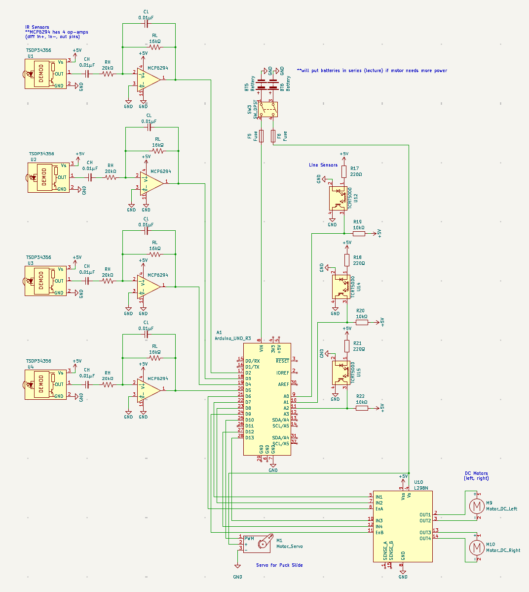
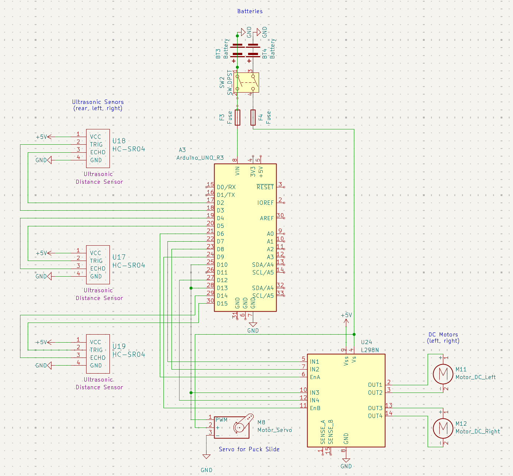

Turty Droid
ME 210: Introduction to Mechatronics — Winter 2026 Final Project

Team Pringle designed and built Turty Droid, an autonomous robot for the ME 210 final project challenge.
Our robot uses ultrasonic sensors for navigation, a PD control loop for wall-following,
and an encoder-controlled shooting mechanism to launch pucks across the playing field.
The robot autonomously rotates to find a wall, aligns itself using side-mounted ultrasonic sensors,
follows the wall using proportional-derivative control, drives to the shooting zone,
aligns for a shot, and fires three pucks in succession before stopping.
Circuit Diagram
Initial Design
Our initial schematic used 3 TCRT5000 line-following sensors to track lines up the field
and 4 TSDP34356 IR sensors (2 front, 2 back) with MCP6294 op-amp signal conditioning
to orient the robot forward and backward. While functional, this approach required significant
analog circuitry and was sensitive to ambient IR noise.

Initial schematic — 4 IR sensors + 3 line sensors + L298N motor driver
Final Design
We simplified to 3 HC-SR04 ultrasonic sensors (left, right, rear) to measure distance
from the arena walls. This eliminated the need for op-amp circuitry and line sensors entirely,
resulting in a cleaner, more reliable system. Wall-following via PD control on the left/right
distance difference replaced line-following.

Final schematic — 3 ultrasonic sensors + L298N motor driver
Pin Assignments (Final Design)
| Function | Arduino Pin(s) |
|---|
| Left Motor (PWM / IN1 / IN2) | 6 / 7 / 8 |
| Right Motor (PWM / IN3 / IN4) | 9 / 13 / 12 |
| Shooter Motor (PWM / IN1 / IN2) | 16 / 15 / 14 |
| Shooter Encoder (A) | 18 |
| Back Ultrasonic (Trig / Echo) | 2 / 3 |
| Left Ultrasonic (Trig / Echo) | 10 / 11 |
| Right Ultrasonic (Trig / Echo) | 4 / 5 |
Calculations
Ultrasonic Distance
Each HC-SR04 measures time-of-flight and converts to centimeters:
distance = (pulseIn_duration × 0.0343) / 2
Speed of sound at room temperature ≈ 343 m/s = 0.0343 cm/μs. Divide by 2 for round-trip.
PD Wall-Following Control
The line-following state uses a PD controller on the difference between left and right distances:
error = leftDistance − rightDistance
derivative = error − lastError
leftSpeed = BASE_LEFT − Kp × error − Kd × derivative
rightSpeed = BASE_RIGHT + Kp × error + Kd × derivative
Tuned constants: Kp = 0.7, Kd = 0 (derivative term disabled after tuning). Speeds clamped to [0, 160].
Shooter Encoder Positioning
The shooting motor uses a rotary encoder for precise 90° quarter-turn shots:
PPR = 690 (pulses per revolution)
COUNTS_90 = (PPR + 2) / 4 = 173 counts
A slowdown window of 100 counts linearly ramps PWM from 205 down to 15 for smooth stops.
Timer1 Interrupt (Control Loop Rate)
Timer1 is configured in CTC mode for a 100 Hz control loop:
OCR1A = (16 MHz / 64 / 100 Hz) − 1 = 2499
Prescaler = 64. This gives a 10 ms control period for the PD loop.
Side-Sum Alignment
Wall alignment is detected when the sum of left and right distances hits a target:
Target Sum = 101.3 cm ± 1.5 cm (for rotation alignment)
Target Sum = 101.3 cm ± 0.5 cm (for fine shoot alignment)